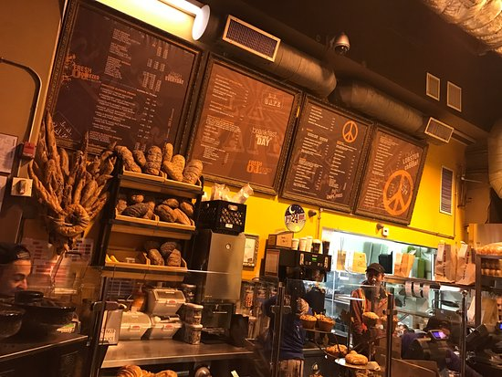

In this project we analyze the users behaviour using multiple methods such exploratory analysis, hypothesis testing and more.
In this project we analyze a movie ticket selling app, it's marketing sources and it's metrics in order to advise marketing experts how much money to invest and where.
In this project we analyze the succsess of video games based on multiple factors.
Our goal is to dentify patterns that determine whether a game succeeds or not in order to spot potential big winners and plan advertising campaigns.
In this project we analyze cars sales ads in order to determine which factors influence the price of a vehicle.